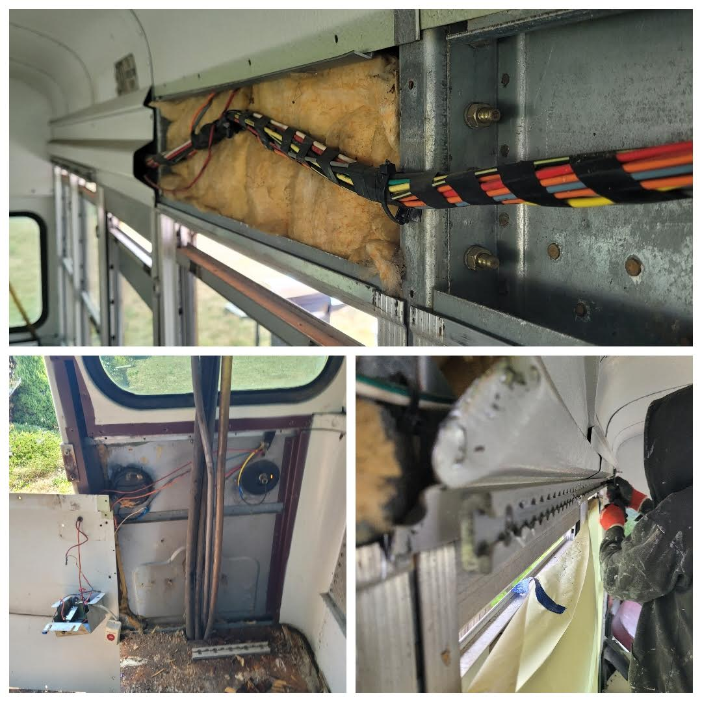

Birdie, aka "The Bird", is my 2000 TC1000 Bluebird school bus. She
hails from Alabama and is slowly but surely being converted into a
home on wheels for me and my animal crew. I flew 1,400 miles to a
state I'd never been to to pick her up sight unseen (except through
photos and videos). Pre-purchase I had a local mechanic check her out
for me just to be safe. He liked the look of her and she checked all
my boxes, so I decided to go for it. My gamble paid off- Birdie is a
solidly built girl with a strong engine (Cummins 5.9) and excellent
transmission (Alison). She had zero rust on her undercarriage as she'd
been in the south for her entire career. Below is a sort of photo
journal of my progress with building her out so far. The most recent
work is at the top, so you’ll need to scroll all the way down if you
want to start at the beginning of our story! (I'll learn how to set
the page up better eventually- I'm still learning coding basics so ya
get what ya get for now üòÖ). Enjoy, and thanks for your interest!
While I was already working on stuff in the back, I figured I might
as well lay down the rest of the framing for the bed platform. If
you can, imagine this whole area covered with plywood. The front
right corner under the bed will be the Dog Nook, which is done
except for paint. The left side under the bed will be a 100 gallon
fresh water tank. The back right under the bed space will be my
garage equivalent- tools, ladder, outdoor gear. At this point the
back is ready to be spray-foam insulated and have walls the bed
platform put in- WOAH!
I temp-mounted my minisplit where I originally wanted and decided I
didn't like it there (above the kitchen counter area). There really
isn't enought clearence above it, and it just feels bulky. I decided
to mount it on the back wall in the bedroom instead, but that meant
that the back wall needed to have some studs put up. Tadaaaaa!
I picked an exterior color!!! I went with this caramel camel khacki
sort of deal, with the thought that it's warm toned but neutral, and
will look excellent behind the fun hippy stripes I hope to add
eventually! It unfortunately covers like shit, meaning it will need
a LOT of coats to be completely opaque. Live and learn! ü´†
I started doing some work around the closet the other day and
realized I HATED how hacky the bottom section looked. Sooooo I
ripped it out and started again, and in the meantime also installed
the top shelf.
I'm going to leave 2 windows in my bathroom for maximum light, but
still wanted some privacy, so went with this leafy green and gold
window cling film!
Outer bathroom wall is up!
Realized I haven't given you guys a gernal view of the chaos in a
while- here ya go!
Here's the front bookshelf/cubby and the dash!
I really wanted a bookshelf type area built in to the front wall of
the bus, again so as not to waste any space! I'll frame it out later
and add verticle boards on either side to finish the front wall off.
Made some progress in terms of my solar set-up with the help of my
mum. Half the panels are mounted now! üåû
Ok ok this I'm honestly so proud of! I decided I wanted to reuse the
original dashboard since it's a super awkward shape that would have
been hard to recreate out of wood. That being said, I knew I was
removing the heater that was up front, which meant a lot of the
cavity space within the dash wouldn't be used. One of the biggest
things about living in a skoolie is that you nevvvvver want to waste
space. I decided to modify the dash by opening up sections to be
cubbies so that I'll have more room for little-stuff storage, just
like the glove compartments in a standard vehicle! I used the angle
grinder to cut [surprisingly straight] lines for long cubby spaces,
and then used the same tool to smooth off the edges. After I had
sprayed everything a glossy black, I used some edge trim stuff
(traditionally used for car doors as a seal) to further safety-proof
the edges and to make the whole thing look more finished. I'm so
stoked with how it turned out!!
My initial tangle with mounting solar panels resulted in me filling
in holes I had drilled in the roof. I got smart after that and used
a template to sketch out (literally right onto the room) where all
the panels should go.
Birdie's poor wipers were looking a little worse for ware, so I took
off some of the surface rust and rattle canned them with a rust
preventative paint. They look glossy and good as new now!
One of my projects in the last month was removing the front and rear
flasher lights and covering over where they were. Luckily
skoolie.com offers premade kits with everything you need, so the
process was quick and painless! üòâ
I finally chose a new air-ride driver's seat and had it delivered!
It's exactly what I was looking for and I'm so excited about it!
Proof that sometimes I just have to learn through mistakes! üòÖ
YOU GUYS!!!!! I STARTED THE ELECTRICAL!!!! Huge shout out to my new
friend Jeff who came out for a day to be my moral support and
knowledgable guide as I started this endevor. It is going to take
what feels like forever, but feels significantly less scary now that
I've taken my first steps.
The closet has been "wallpapered" and the shelves have been sanded
and stained! Fun fact about those shelves: they're made out of
repurposed shelves from a bookcase that lived in my grandparents'
house since my mum was a kid! I claimed it when their house was sold
years ago and it's been waiting in storage to be worked into my bus
home!
I finally bit the bullet this weekend and painted the roof. I had
sanded and washed it about a month ago but have been putting off
painting because... yaaawn- boring! But it needed to be done in
preparation for mounting the solar panels, so done it got!
The Dog Spot is coming along nicely. This whole back area will be
covered by my bed, so this little corner will be like a doorless
kennel for the pups- a cozy little cave!
Last weekend I worked on a pull-out shelf/drawer for my
fridge/freezer combo! The cool thing about the slides I used is that
they lock when puhshed all the way in. That means things won't go
flying when I'm driving- yay!
Yesterday I turned two doors into one door! Birdie originally had
two doors that hinged on either side and closed to each other in the
middle. I cut one side off its hinges and used thick aluminium and
bolts to attach the loose door to the still-hinged door. I am SO
pleased with how it turned out! Once the rain here stops I'll be
able to spray paint all the hardware and use the grinder to take the
ends of the bolts off for a more finished look.
Last Weekend: I fraamed out the walls of the dogs' cozy cave area
Getting Caught Up: The same weekend I also started framing out the
closet and laid out the under-the-bed dog space!
Getting Caught Up: Then I built a base for my sink to sit on!
Getting Caught Up: Next I framed out the walls for my
shower/bathroom area.
Getting Caught Up: With a little help getting started, I built
frames for my couch bench things! They're so much bigger in real
life than in my head and I'm so happy with them.
Getting Caught Up: Finally took care of the rest of this awkward
entryway floor space!
4/29/25: Today (that's right, the Birdie Blog is officially caught
up!) I cut some lumber to frame out more of my walls. I also broke
up some of the leftover insulation to use inside my walls. The plan
is to use sprayfoam around this, possibly with another layer of foam
board in there too.
Yesterday I got the "leftover space" piece of subfloor rough (very
rough) cut and put into place.
Then a couple days later I came back and got the rest of the
insulation in, then the rest of the plywood. Other than a couple
feet of space at the front, and the steps, I have a subfloor! WOO!
This is huge progress for me!!
The next step was putting down insulation and plywood for my
subfloor!!! This involved renting a pickup for an hour, as the
materials needed were not going to fit in my suv- by a longshot.
Shoutout to my truck rental guys at a certain home improvement store
& to my guy D who guarded my 2 carts worth of stuff while I went and
pulled the truck up, AND to the girl with her nails done who
fearlessly helped me load plywood into the truck. Other than having
to drive a Ford (fight me üòí), it was a successful day! I got half
the foam insulation in and one piece of plywood, and called it a
day.
Once the floor was primed, I only had one more thing to do to make
the bus completely watertight: the skylights! I had decided I wanted
to install bubble skylights where both emergency exit hatches were.
This involved climbing up to the roof of the bus- a thusfar
unexplored world! BOY was it dirty up there!
The whole inside of the bus was instantly transformed by the
addition of the skylights. I'm so in love with them already! Huge
shoutout to my partner for helping me figure out how to go about
installing these badboys. We did the first one together and it was
definitely trial by fire! The second one I was able to do on my own
because we'd worked out all the kinks together. ☺️
Finishing up the floor priming was such a good feeling! The bus
finally looked clean and neat- sooo satisfying.
Getting that first step for the floor finished also meant I had a
chance to spray my layout down and really get a visual on where
everything would be!
Friendly reminder to wear your PPE! Mask, check!
Gloves, not so much check... Five days later and the paint had
mostly worn off üòÖ
The next big project was to use the angle grinder on the floors to
get the worst of the rust off, then paint them with a
rust-prohibiting primer for protection, then glue down pennies over
all the holes in the floor ($1.20 in pennies), then run over
everything with a second coat of primer.
A little (lot of) Rust Dust‚Ñ¢ anyone? ü§¢
BUT I knew I wanted to be able to hang a hammock even when the bus
was all built out, so I did some rough estimating and figured out
where she'd fit, and bought some heavy duty hardware to install
permanent mounting points that I'd be able to access even once the
ceiling was installed.
After drilling some pretty epic holes into the ribs, and using
probably way too much locktite, hammock time was officially secured
for all future times to come!
Hammocks though, right? I love me some hammock time...
...and Birdie's ceiling has plenty of sketchy tether points!
Ok so the ceiling. Woof. The ceiling was sheetmetal attached with
rivets to the ribs (steel framework the roof also attaches to) of
the bus. But not, like, a few rivets. Total in the bus (including
walls) I estimated there were about 700 of those fuckers. For the
walls I used an air hammer/chisel to disconect the heads and then
bust them off. For the ceiling though the legerage wasn't right to
use that tool, so I used an angle grinder with a variety of wheels
on it. I felt like such a badass getting comfortable using such a
potentially dangerous tool!
Next to go after the AC fans (which lived under the bus) were the AC
units themselves (inside the bus). I was done removing the walls at
this point and had started on the ceiling, but in order to get two
of the panels down, the AC units had to come out. This was a bit of
a bear of a project, but we got it done (ace bestie and I).
The "upsidedown" of the bus: underneath it! An intimidating but
spacious place ü§ì
As I ground bolts out of the floor, the AC fans underneath
disconnected and eventually fell. I'll be putting in a minisplit for
heat/AC so the existing units were not necessary.
And to go right along with that last PSA, here's another: don't let
your cutting wheels get this bad. Throw that shit awayyyyy!
Ok time for a little Do As I Say Not As I Do PSA: if you wear the
cheap gloves, the metal shards flying out of your angle grinder WILL
melt holes in them. So, yeah. Invest in leather gloves. Noww you
knooow! (Catch the Bill Nye reference millennials??)
Sometimes a girl's gotta take a break and enjoy the bright blue of
the sky, ya know?

Along the same lines as the walls, these wiring casings and higher
up brackets had to come down. Those things were a PAIN because the
bolts were too deep in the wells to be able to get to, so they had
to be cut off with the angle grinder. EESH. Peep my rockstar bestie
helping me out tho?? ü•∞
I punched the rivets off and then the use a crowbar to pry the wall
panels off their base. "It was a pain" would be the understatement
of the year, hah!
At vaguely the same time as all this, I rented a hammerdrill and
went to town on the wall rivets. BTW, in total there were about 750
rivets on this dang bus (including those securing the ceiling, as
well as the walls). Spoiler alert, they're all gone now- ya girl's a
badass üòé
Another side project I was working on at the time was removing the
back heater, which involved the scariest thing I'd done up to this
point- cutting through and removing hoses that connected back into
the radiator. I successfully shortened the circuit to exclude all
the hose that had previously led back to the heater in question.
I also used the heat gun to remove the "SCHOOL BUS" lettering on the
sides of the bus. It was tedius, but it did work!
It "worked a treat", as my brother would say! Here's the before and
after.
While I was working on taking up the subfloor, I had a few other
projects going as well. One was taking a heatgun and a putty knife
to the glue that was on the steps after I got the rubber step liners
up.
Finally I got one full sheet of the subfloor plywood up and that got
me motivated. The stuff bolted through it had been seriously
disheartening because I was still a newb at this point and wasn't
sure how to go about tackling it! It's wild to think how much I've
learned since then.
Once I got all the rubber flooring up, I set my eye to ripping up
the plywood subfloor. Unfortunately for me there were some very
stubborn L brackets bolted thru the plywood and the floor of the bus
to the underside. The sawzall and I became besties! üôÉ
First step was to rip up all the rubber flooring that was covering
the plywood, which in turn was sitting on top of the sheetmetal that
made up the floor of the bus.
Ladies and gentlefish, your PPE Queen üíÖ
My brother and his landlord generously agreed to let me house Birdie
at his apartment, so after her oil change and a trip to Cummins, I
got her settled into her new home.
Once we made it I took her to a local shop for an oil change and
they lifted her up! I was able to walk around underneath and point
at things and ask what they were- super cool.
The drive home was a little rough and ended up taking about 5 days,
although one of those days was speant at various autoshops üôÉ
Some pre-Birdie photos, and the two of us starting our trip home!
 Birdie, aka "The Bird", is my 2000 TC1000 Bluebird school bus. She
hails from Alabama and is slowly but surely being converted into a
home on wheels for me and my animal crew. I flew 1,400 miles to a
state I'd never been to to pick her up sight unseen (except through
photos and videos). Pre-purchase I had a local mechanic check her out
for me just to be safe. He liked the look of her and she checked all
my boxes, so I decided to go for it. My gamble paid off- Birdie is a
solidly built girl with a strong engine (Cummins 5.9) and excellent
transmission (Alison). She had zero rust on her undercarriage as she'd
been in the south for her entire career. Below is a sort of photo
journal of my progress with building her out so far. The most recent
work is at the top, so you’ll need to scroll all the way down if you
want to start at the beginning of our story! (I'll learn how to set
the page up better eventually- I'm still learning coding basics so ya
get what ya get for now üòÖ). Enjoy, and thanks for your interest!
Birdie, aka "The Bird", is my 2000 TC1000 Bluebird school bus. She
hails from Alabama and is slowly but surely being converted into a
home on wheels for me and my animal crew. I flew 1,400 miles to a
state I'd never been to to pick her up sight unseen (except through
photos and videos). Pre-purchase I had a local mechanic check her out
for me just to be safe. He liked the look of her and she checked all
my boxes, so I decided to go for it. My gamble paid off- Birdie is a
solidly built girl with a strong engine (Cummins 5.9) and excellent
transmission (Alison). She had zero rust on her undercarriage as she'd
been in the south for her entire career. Below is a sort of photo
journal of my progress with building her out so far. The most recent
work is at the top, so you’ll need to scroll all the way down if you
want to start at the beginning of our story! (I'll learn how to set
the page up better eventually- I'm still learning coding basics so ya
get what ya get for now üòÖ). Enjoy, and thanks for your interest!